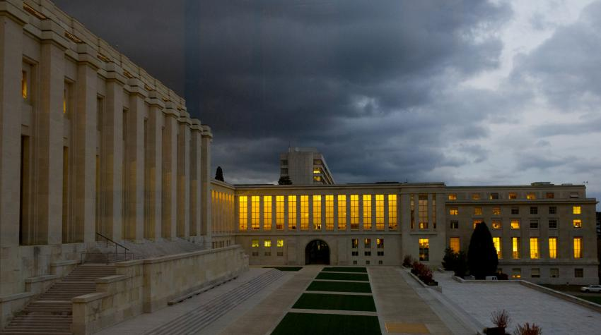

UNOG - Source: https://www.un.org/en/geneva
ATIProject
Skills acquired & tools:
| Developed BIM models and coordinated architectural deliverables
| Managed large-scale Revit models and architecture remodeling based on point cloud
| Worked with Recap files and point cloud
| Oversaw technical documentation from detail design to execution
| Supported IFC exports and structured information delivery
| Supported workflows using Dynamo
What began during my second-level Master’s degree in BIM Management became one of the most transformative experiences of my professional journey. As a BIM Specialist working on the renovation of the United Nations Office at Geneva (UNOG), I was introduced to the complexity of heritage projects, large-scale coordination, and the real connection between BIM and construction. Joining the dynamic environment of ATIProject was a turning point in my career. Surrounded by talented young professionals, I experienced a culture of collaboration, innovation, and digital thinking that deeply shaped my professional mindset. Working on construction-phase and As-Built workflows, shop drawings, and multidisciplinary coordination allowed me to understand BIM not only as a methodology, but as a bridge between design, information, and on-site reality. The project strengthened my expertise in Revit, coordination workflows, HBIM, and information management, while teaching me the importance of precision, collaboration, and attention to detail in complex international projects.